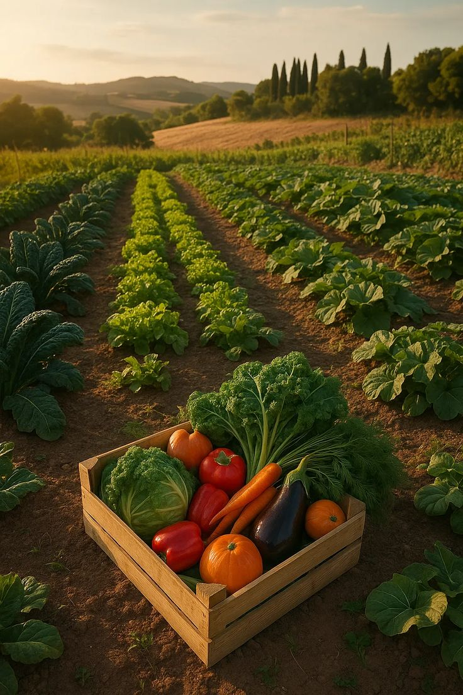
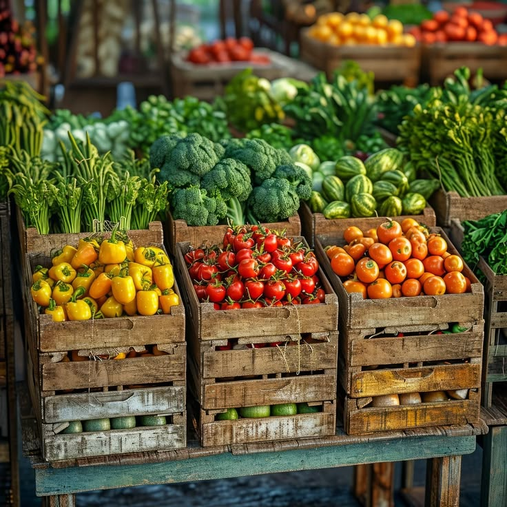
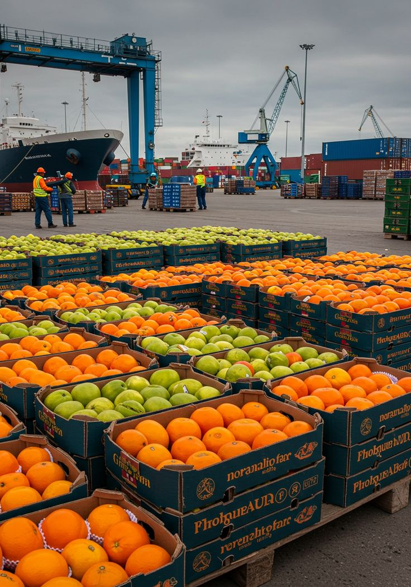

Behind the Scenes
From Farm to Your Table
Every morning before sunrise, our team is already at work. From selecting the freshest produce at local farms to carefully packing your orders — every step is handled with care and precision.
4:00 AM — Farm Pickup
Our drivers collect fresh produce from partner farms
6:00 AM — Quality Check
Each item inspected for freshness and quality
8:00 AM — Packed & Delivered
Orders packed and delivered fresh to your door



